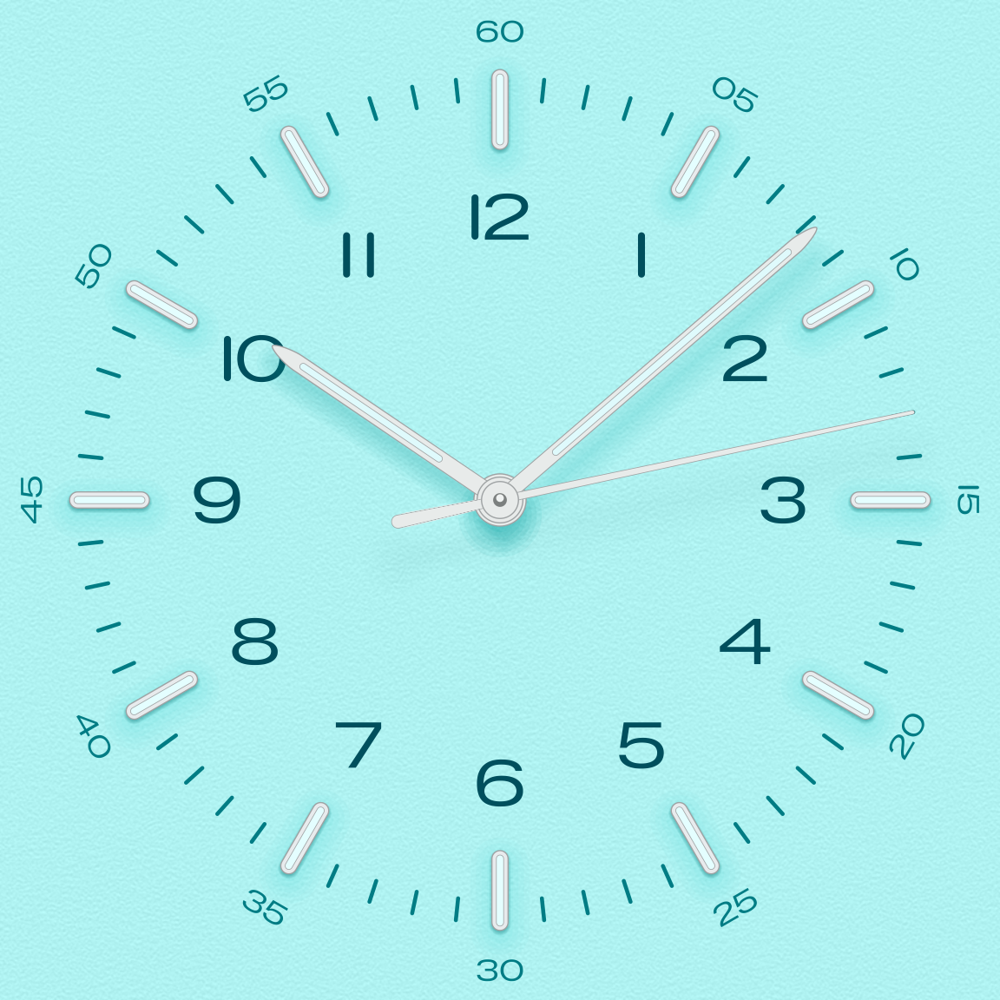
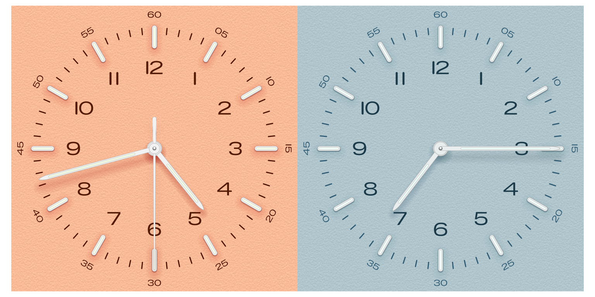
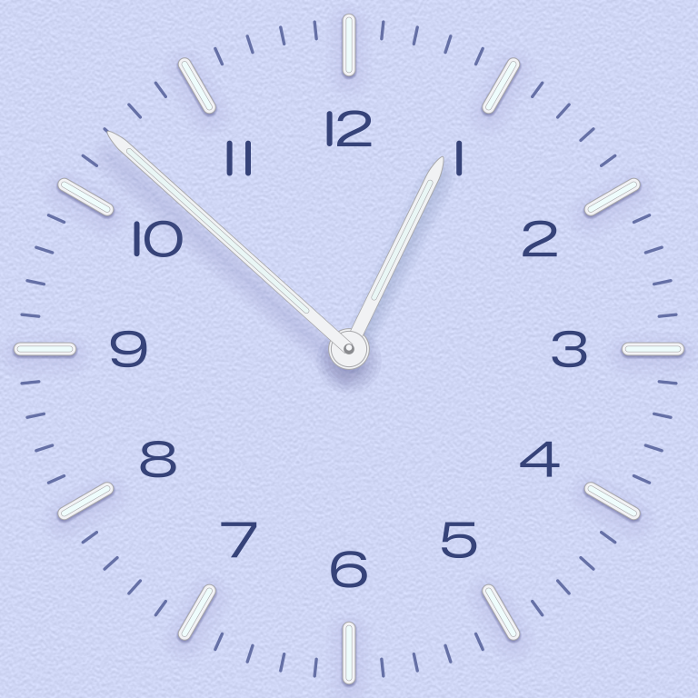
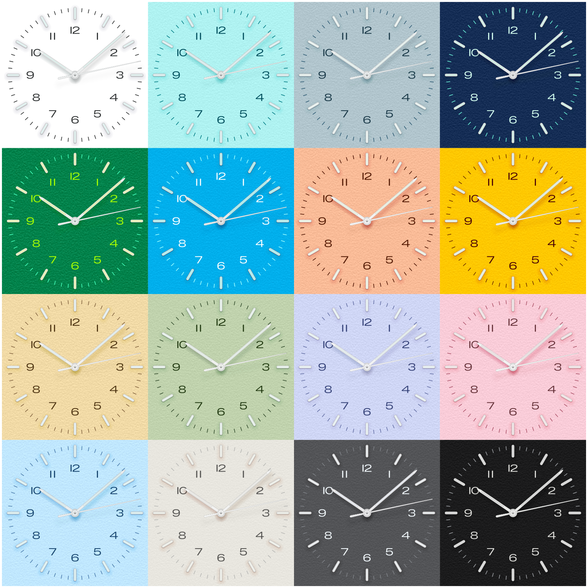
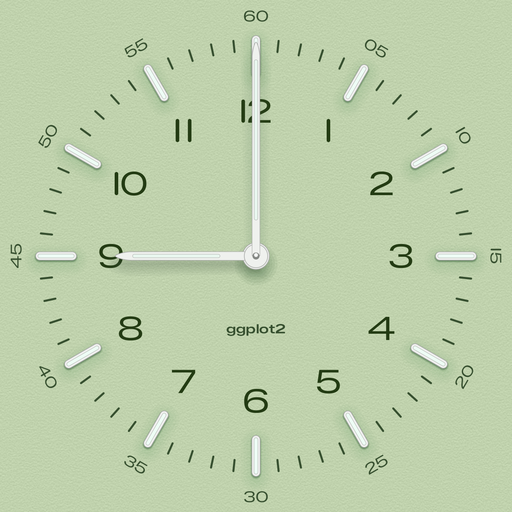

bauhaus_clock() draws the dial of the screensaver as a
ggplot, in any of the sixteen colourways: the minute track and its
numerals, the steel hour indices with their lume inlays, the hour
numerals, the three hands and their soft, tinted shadows, all on the
grained plate.
The geometry follows the screensaver’s measured design, with every length a fraction of the distance from the centre to the end of the 12 o’clock index. Like the screensaver, it draws every “1” as a plain capsule rather than the font’s flagged glyph. The steel is drawn flat, without the screensaver’s per-pixel shading.
bauhaus_clock("turquoise")
Saving
Everything on the dial, numerals included, is drawn as shapes, so it scales to any size. Save it square:
ggsave("noir.png", bauhaus_clock("noir"), width = 4, height = 4, dpi = 300)Time
The default time, 10:08:13, is the one shown in the screensaver’s
reference renders. Pass a time as "HH:MM",
"HH:MM:SS" or a date-time, for example
Sys.time():
library(patchwork)
bauhaus_clock("salmon", time = "16:42:30") |
bauhaus_clock("glacier", time = "07:15", seconds = FALSE)
A simpler dial
Leave out the seconds hand and the minute numerals for a quieter face, or the grain for a flat plate:
bauhaus_clock("lavender", time = "12:52", seconds = FALSE, minute_numerals = FALSE)
All sixteen
clocks <- lapply(bauhaus_dial_names(), bauhaus_clock, minute_numerals = FALSE)
wrap_plots(clocks, ncol = 4) &
theme(plot.margin = margin(2, 2, 2, 2))
Building on the dial
The result is an ordinary ggplot, so you can add to it. The plot runs from -1.16 to 1.16 on both axes (from -1.04 without the minute numerals), with the end of the 12 o’clock index at y = 1.
col <- bauhaus_colours("pistachio")
bauhaus_clock("pistachio", time = "09:00", seconds = FALSE) +
annotate("text",
x = 0, y = -0.33, label = "ggplot2", colour = col[["track"]],
family = bauhaus_font_family("semibold")
)